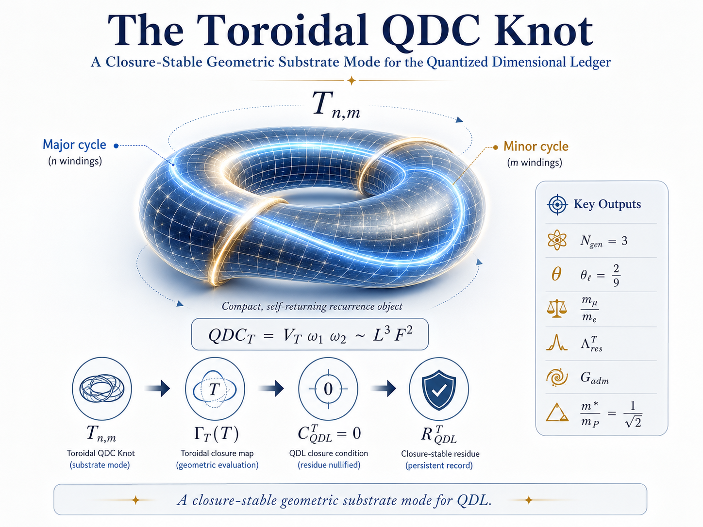
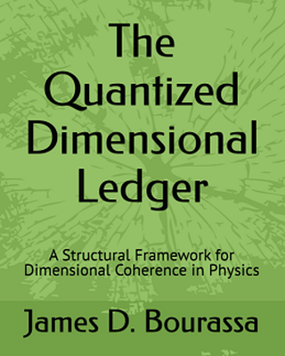

Program Resources
This page collects supporting materials for the QDL research program, including the canonical QDL roadmap, the JTAP metrology foundation, the QDL substrate capstone, the Toroidal QDC Knot geometric substrate keystone, the QDC Completion Theorem, the SMEFT Γ(O) audit companion, the charged-lepton / mass-spectrum sequence, Core Closure Sequence access, prototype demonstrations, books, benchmark access points, executable validation infrastructure, and reader-facing materials that support orientation, auditability, and technical review.
```Recommended path: canonical QDL roadmap → JTAP metrology foundation → QDL Substrate Capstone → Toroidal QDC Knot → QDC Completion Theorem → SMEFT Γ(O) Audit Companion → charged-lepton / mass-spectrum sequence.
```Recommended Reading Path
The seven-anchor hierarchy for evaluating the current QDL program coherently.
QDL Roadmap / Program Architecture
Canonical orientation record. Consolidates QDL from closure admissibility to physical selection and explains the program layers, claim-status firewalls, failure modes, and near-term validation paths.
JTAP Metrology Paper
First peer-reviewed foundation. Establishes QDL in metrology through dimensional closure, QMU ledgers, and the ontology of physical constants.
Planck-Scale Substrate Capstone
QDL substrate architecture. Defines the substrate as the closure-persistent residue of candidate Planck-scale fluctuation structure, not a medium, material aether, or hidden substance.
Toroidal QDC Knot
Geometric substrate keystone. Gives the QDL substrate a compact closure object: a toroidal two-cycle recurrence mode realizing QDCT = VTω1ω2 ∼ L3F2.
QDC Completion Theorem
Completion-theorem spine. Organizes the path from Planck-scale toroidal QDC closure to Standard-Model admissibility, matter-basis minimality, primitive three-family recurrence, charged-lepton closure, gravitational recurrence, and explicitly declared remaining proof gates.
SMEFT Γ(O) Audit Companion
Falsifiable operator-governance test. Provides a representative source-anchored, machine-readable audit subset for closure-vector classification of Warsaw-basis SMEFT operator mixing.
Charged-Lepton / Mass-Spectrum Sequence
Numerical spectrum application. Develops QDL occupancy-amplitude closure, Koide charged-lepton geometry, the relational phase θℓ = 2/9, and charged-lepton mass-ratio reconstruction.
This path gives visitors a coherent progression: canonical program roadmap → peer-reviewed metrology foundation → substrate architecture → geometric substrate keystone → completion-theorem spine → falsifiable operator audit → numerical mass-spectrum application.
Program Capstone Access
The program-level reference for QDL as a closure-admissibility theory of physical persistence.
The current QDL program capstone is Planck-Scale Fluctuation Closure as the Substrate Interpretation of the Quantized Dimensional Ledger: A QDL Capstone on Physical Persistence, Compton–Gravity Thresholds, Mass-Ratio Closure, Vacuum Filtering, and EFT Audits .
This record defines QDL as a residual-first closure-admissibility theory of physical persistence. The substrate is not treated as a mechanical medium, classical aether, or hidden substance; it is defined as the closure-persistent residue of candidate Planck-scale fluctuation structure.
This capstone serves as the organizing reference for the broader QDL program. The Core Closure Sequence supplies the technical records, while the capstone supplies the shared identity, claim-status discipline, substrate interpretation, and audit logic.
Toroidal QDC Knot
The canonical geometric substrate-mode keystone for the QDL program.

The canonical QDL geometric substrate-mode record is Bourassa, J. D. (2026). The Toroidal QDC Knot: A Closure-Stable Geometric Substrate Mode for the Quantized Dimensional Ledger (v1.0). Zenodo. https://doi.org/10.5281/zenodo.20367493 .
This paper extends the substrate capstone by proposing a compact geometric persistence object: a toroidal QDC knot with QDCT = VTω1ω2 ∼ L3F2.
Its closure sequence is Tn,m → QDCT → ΓT(T) → CTQDL = 0 → RTQDL. Conditional links include three-family recurrence, the charged-lepton phase θℓ = 2/9, Koide occupancy-amplitude closure, vacuum residual selection, gauge-sector admissibility, non-SM exclusion, the Compton–gravity threshold, and a candidate toroidal QDC Hilbert space.
Scope note: this is a conditional geometric substrate hypothesis. It does not claim a completed derivation of the Standard Model, a full quantum gravity theory, a numerical derivation of the cosmological constant, or a final solution to dark matter, inflation, black-hole microstates, or time.
QDC Completion Theorem Access
The completion-theorem spine connecting the toroidal QDC substrate to Standard-Model admissibility and open proof gates.

The current QDL completion-theorem spine is Bourassa, J. D. (2026). The QDC Completion Theorem: Matter-Basis Minimality, Three-Family Automorphism, Charged-Lepton Closure, and Gravitational Recurrence in the Quantized Dimensional Ledger (v1.0). Zenodo. https://doi.org/10.5281/zenodo.20692677 .
This record consolidates the route from the Planck-scale toroidal QDC substrate to local Standard-Model admissibility and gravitational recurrence. It organizes QDL around exact anchors, conditional reconstruction gates, and explicit remaining proof targets.
Scope note: the theorem does not claim that every Standard Model constant has been computed. It identifies the finite gates that must close for QDL to become a candidate substrate-level completion theory: matter-basis minimality, primitive three-family recurrence, charged-lepton phase closure, mass-scale completion, gauge-coupling normalization, an action principle, gravity recovery, dark-sector residuals, and cosmological residuals.
SMEFT Γ(O) Audit Companion
The first machine-readable technical companion dataset to the QDL substrate capstone.
The QDL SMEFT Γ(O) Audit Companion v1.0 is a machine-readable dataset and technical companion to the QDL substrate capstone: Bourassa, J. D. (2026). QDL SMEFT Γ(O) Audit Companion v1.0: A Representative Source-Anchored Subset for Closure-Vector Classification of Warsaw-Basis Operator Mixing (v1.0) [Data set]. Zenodo. https://doi.org/10.5281/zenodo.20357001 .
The package includes representative Warsaw-basis operator assignments, exact/source-anchored audit rows, row-level extraction scaffolds, strict-zero and compensator targets, a verification taxonomy, data dictionary, changelog, sources table, README, workbook, and package ZIP.
Scope note: this v1.0 record is a representative source-anchored audit subset and scaffold. It does not claim completion of the full 2499 × 2499 three-generation SMEFT anomalous-dimension matrix, and it asserts no confirmed R-class violations.
Mass-Spectrum Resources
The numerical spectrum application layer of the QDL program.
A current synthesis record is QDL Charged-Lepton Mass Spectrum: A Synthesis of Derived Structure and Phenomenological Radial Closure .
The mass-spectrum sequence develops occupancy-amplitude closure, Koide charged-lepton geometry, relational phase quantization, and charged-lepton mass-ratio reconstruction.
This sequence is best read after the substrate capstone, Toroidal QDC Knot, and QDC Completion Theorem. The completion theorem identifies the charged-lepton phase, radial scale, quark, neutrino, CKM/PMNS, and gauge-coupling tasks as explicit open or conditional gates.
Core Closure Sequence Access
The current primary pathway into the QDL technical record.
The Core Closure Sequence is the central technical access route for the QDL program. It organizes the work around a roadmap and claim hierarchy, numerical ledger checks, technical pillars, residual tests, neutral matching, Compton realization, gravitational QDC recovery, and completion-gate structure.
The earlier lattice, closure-formalism, SMEFT, metrology, and book records remain important, but they are now best read as foundational background to the broader closure-sequence architecture, substrate-capstone interpretation, toroidal geometric keystone, and QDC Completion Theorem.
Use the Publications page to follow the seven-anchor hierarchy, Core Closure Sequence, technical pillars, closure grammar papers, QDL–SO10–1 benchmark series, and earlier foundational path.
Use the Research Program page for the conceptual architecture: framework layer, scientific applications, executable infrastructure, residual-first tests, toroidal substrate geometry, QDC completion gates, and application branches.
Use the QDL Admissibility Calculator to test declared vectors against closure rules and inspect live examples.
Executable Infrastructure
QDL as machine-executable validation infrastructure for physical measurement and modeling workflows.
QDL Physics Institute has filed U.S. Provisional Patent Application No. 64/055,985, titled Systems and Methods for Structural Admissibility Validation of Physical Measurement and Modeling Pipelines.
This filing marks the executable infrastructure phase of QDL: applying structural admissibility as a machine-executable validation layer for physical measurement, modeling, simulation, uncertainty analysis, AI-generated scientific outputs, sensor fusion, digital twins, and related technical workflows.
The purpose is practical rather than speculative: to test whether QDL-style ledger mapping, closure checks, audit traces, and downstream workflow controls can identify structural failures that ordinary unit checking or dimensional homogeneity may not detect.
Status: U.S. provisional patent application filed; patent pending.
The QDL Measurement Integrity Engine is an early executable-infrastructure concept for applying structural admissibility checks to physical measurement and modeling pipelines.
The engine is designed to receive a declared measurement or model specification, assign integer-valued ledger vectors to its components, check ordinary projected dimensional homogeneity, apply a QDL closure or admissibility rule, and generate an audit trace with a certification, warning, rejection, or repair recommendation.
The motivating use case is measurement integrity: a model may pass ordinary unit checking while still containing a structurally non-admissible correction, transformation, or hidden dimensionless factor. QDL executable infrastructure is being developed to make such failures auditable.
Status: Prototype direction disclosed in U.S. Provisional Patent Application No. 64/055,985; patent pending.
Prototype Demonstration
A static example of how structural admissibility screening can be presented as a workflow.
This resource presents a minimal static demonstration of how a model or pipeline can be screened for structural admissibility before calibration and deployment. It is framed as an illustration of workflow, not as a full implementation.
The live interactive version of this idea now appears in the QDL Admissibility Calculator, while this prototype remains useful as a presentation-oriented workflow artifact.
- Use it as a conceptual orientation tool, not as a substitute for the formal papers.
- Read it after the Research Program page if you want to understand workflow implications.
- Treat it as a presentation artifact for structural screening logic rather than a software release.
- Use the QDL Calculator when you want a live interactive entry point.
- Use the QDL Measurement Integrity Engine direction when evaluating applied measurement-integrity and model-validation workflows.
- Use the SMEFT Γ(O) Audit Companion when evaluating source-anchored EFT/operator-governance tables.
- Use the QDC Completion Theorem when evaluating the finite completion-gate map.
The demo belongs naturally under framework support material rather than the top-level scientific navigation, which is why it is placed here in Resources.
Books & Reader-Facing Material
Longer-form synthesis and reader-oriented entry points for the broader program.

This volume functions as a synthetic and accessible presentation of the QDL program, while the formal, canonical claims remain anchored in the DOI-backed paper record.
Useful for readers who want the overall architecture and motivation of the program before moving into the technical papers.
The formal mathematical structure and strongest technical claims remain in the DOI-backed papers, datasets, and preprints.
Use the seven-anchor hierarchy first. The book remains useful as orientation, but the current canonical program path runs through the roadmap, JTAP foundation, substrate capstone, Toroidal QDC Knot, QDC Completion Theorem, SMEFT audit companion, and mass-spectrum sequence.
Scientific Application Resources
Application-layer records that ground QDL concepts in concrete physical domains.
A QDL gravitational dynamics paper identifies the gravitational parameter μ = GM as a direct realization of the Quantized Dimensional Cell form, L3F2, and interprets Keplerian closure as μ = r3ω2 for circular motion and μ = a3n2 for elliptical Keplerian motion.
This paper provides a concrete physical anchor for QDL closure: the QDC is not merely an abstract dimensional form, but appears in the standard structure of orbital mechanics.
The Compton realization paper connects quantized dimensional closure to localization-frequency structure and operator sector selection.
The neutral matching paper develops a 1/18 uniqueness theorem from binary–ternary sector coupling, Z6 operator grading, and electroweak residual preservation.
This synthesis separates strong claims, open residuals, falsification tests, and the emergence of a compact QDL closure grammar.
The SMEFT Γ(O) audit companion provides the first source-anchored dataset for applying QDL closure-vector classification to representative Warsaw-basis SMEFT operator-mixing rows.
Benchmark Access
Entry points to executed benchmark records and supporting methodological materials.
Residual-first benchmark methodology using declared model families and public-data audit logic.
Reproducible benchmark record structured around methodological auditability rather than claims of new effects.
Optical cavity benchmark record intended to be read conservatively as a method-oriented executable benchmark.
DOI-backed executable benchmark sequence for the QDL–SO10–1 grand-unification branch. The series includes benchmark definition, low-energy phenomenology, stress testing, gauge-running hardening, scalar-threshold closure, proton-decay exposure, flavor/leptogenesis hardening, and integrated capstone synthesis.
This series is presented as a benchmark-level GUT program rather than a final theory of nature. Its purpose is to make QDL-based unification claims auditable, reproducible, and explicitly falsifiable.
Capstone record: Executable Closure of the QDL–SO10–1 Benchmark
Recommended reading order: start with the current seven-anchor hierarchy, then read the QDL–SO10–1 capstone Paper #9 for the integrated map, Papers #5–#8 for the executable hardening details, and finally Papers #1–#3 for the original benchmark, phenomenology, and stress-test sequence.
These records are best understood as benchmark and replication resources. They are methodological records designed for auditability and replication, not standalone claims of new physical effects.
```Supporting Materials
Resource-like content that supports interpretation, orientation, and broader use of the program.
QDL is framed as a dimensional-closure and model-admissibility architecture with implications for model pre-verification, operator filtering, constants, experiment design, metrology, measurement-chain integrity, and engineering or instrumentation workflows.
In the rebuilt site, those implications are split appropriately: core scientific implications appear on the Research Program page, the DOI-backed technical record appears on the Publications page, and resource-style orientation material lives here.
- Start with the canonical QDL roadmap for the current program architecture.
- Use the JTAP metrology foundation for the first peer-reviewed foundation.
- Use the QDL Substrate Capstone for program identity and physical-persistence framing.
- Use the Toroidal QDC Knot for the geometric substrate keystone.
- Use the QDC Completion Theorem for the completion-theorem spine and open-gate map.
- Use the SMEFT Γ(O) Audit Companion for the first machine-readable operator-mixing audit artifact.
- Use the charged-lepton mass-spectrum synthesis for the numerical spectrum application.
- Use Core Closure Sequence for the current technical path.
- Use Research Program for the conceptual and formal structure.
- Use Publications for the DOI-backed record, technical pillars, datasets, and application papers.
- Use the QDL Calculator for a live demonstration layer.
- Use the executable infrastructure section above for the patent-pending measurement-integrity and model-validation direction.
- Use the QDC gravitational dynamics record as a concrete physical example of the Quantized Dimensional Cell in orbital mechanics.
- Return to Resources for prototypes, books, and benchmark access.
- Use the QDL–SO10–1 capstone record when evaluating the completed executable GUT benchmark branch.
- Use Contact for editorial, technical, collaboration, or support correspondence.